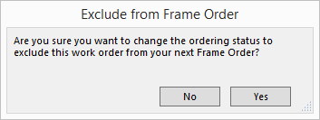
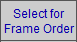
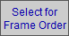
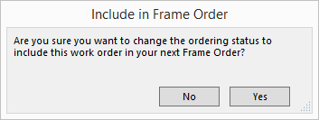

Cancel a Frame Order
When a Work Order is created, FrameReady automatically selects all the chosen items/materials to be ordered. FrameReady then allows you to remove a specific Work Order from your Frame Order.
How to Cancel a Frame Order (per Work Order)
-
Locate the Work Order (form view) for which you do not need to order any materials.
For example, you checked your inventory for a Rush Oorder and see that you have enough moulding and matboard to complete the job, or a customer has cancelled an order and you have refunded their deposit. -
Click the Cancel Frame Order sidebar button.

-
The Exclude for Frame Order dialog box appears.

-
Click Yes.
The Work Order is removed from the materials ordering stream.
The button text changes to "Select for Frame Order."

How to Add a Work Order to a Frame Order
-
If you need to re-select a Work Order for materials purchasing, then click the Select for Frame Order sidebar button.

-
The Include in Frame Order dialog box appears.

-
Click Yes.
-
The Work Order ordering status is changed to include this Work Order in your next Frame Order.
The button text changes to "Cancel Frame Order."

© 2023 Adatasol, Inc.